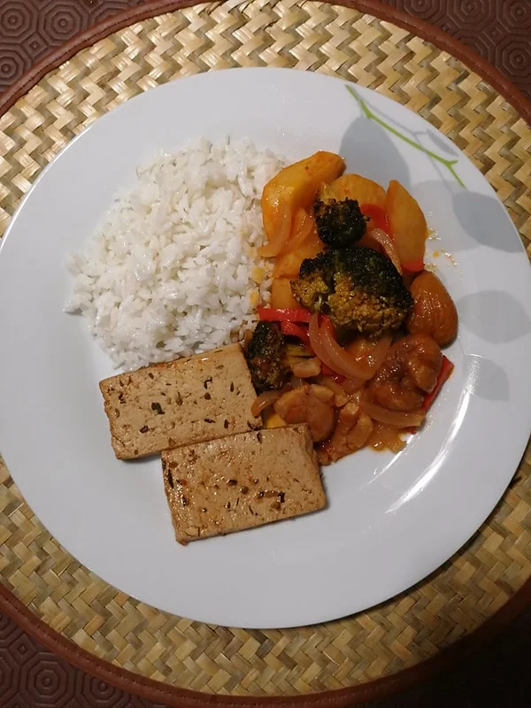

Vegetais Assados no Forno
Tempo de preparação
10min
Horas de Cozimento
1h30min
Tempo Total
1h40min
Porções
3

Ingredientes
Vegetais:
- 1 cebola cortada às tiras
- 3 batatas cortadas em palitos largos
- 8 castanhas pré congeladas
- ½ pimento vermelho cortado às tirinhas
- 6 cabeças de brócolo (dar um lanho em x no caule)
- sal q.b
- azeite q.b
- polpa de tomate q.b
- 1 folha de louro
Tofu:
- 4 fatias de tofu
- molho de soja q.b
- vinagre balsâmico q.b
- orégãos q.b
- pimenta preta q.b
- pimentão doce q.b
- alho em pó q.b
- água q.b
Instruções
- Se tiver tempo deixe o tofu a marinar no dia anterior, senão 15 a 30 minutos no próprio dia.
- Num recipiente disponha as fatias de tofu e tempere com molho de soja, vinagre balsâmico, orégãos, pimenta preta, pimentão doce, alho em pó e um pouco de água. Leve a marinar no frigorífico tapado com papel de alumínio.
Vegetais:
- Pré aqueça o forno a 180ºC.
- Numa bacia, misture as batatas cortadas em palitos grandes com sal e polpa de tomate.
- Numa travessa de ir ao forno, disponha a cebola cortada em meias luas, as batatas, as castanhas congeladas e a folha de loureiro. Regue com um bom fio de azeite e água para ajudar no cozimento. Leve ao forno por 30 minutos.
- Passada meia hora, retire a travessa do forno, vire as batatas e as castanhas e adicione à travessa os brócolos e o pimento vermelho. Adicione mais água se necessário e polpa de tomate. Leve novamente ao forno por mais 30 minutos.
- Numa travessa mais pequena, disponha as fatias de tofu com um pouco da marinada e coloque ao lado da travessa dos vegetais. Vire o tofu de lado de 15 em 15 minutos.
- Após os vegetais e o tofu estarem bem assados, (deve demorar mais ou menos 1h / 1h30 minutos, depende dos fornos), está pronto a empratar.
- Acompanhe com arroz branco e legumes salteados em azeite e alho!